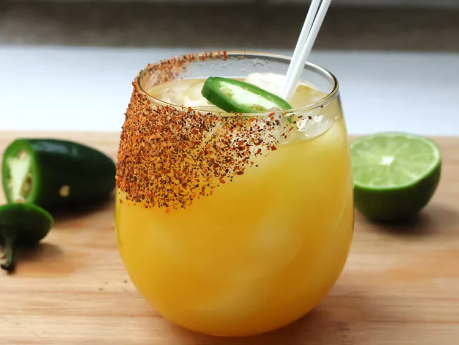

Spicy Mango Margarita Recipe

Description
This spicy mango margarita is a vibrant cocktail that blends sweet mango nectar with a kick of crushed jalapeño - the
perfect balance of sweet, spicy, and tangy. Feel free to add extra jalapeno if you're craving more heat.
Ingredients
- 1 lime wedge
- 1 teaspoon Tajin
- 2 cups ice
- 2 fl oz. silver tequila
- 3 jalapeno slices
- 4 fl oz. mango nectar
- 3/4 fl oz. orange liqueur
- 3/4 fl oz. lime juice
Steps
- Sprinkle chili lime seasoning onto a plate. Moisten the rim of a glass with lime wedge. Press the moistened rim into the
seasoning. Fill the glass with ice.
- Fill a cocktail shaker with tequila and 2 jalapeno slices. Use a muddler to crush the peppers. Add mango nectar, triple
sec, and lime juice to the shaker and add 1 cup of ice. Seal and shake vigorously until outside is frosted, 10 to 15
seconds.
- Strain margarita into the glass and garnish with remaining jalapeno slice, if desired.
Home Page